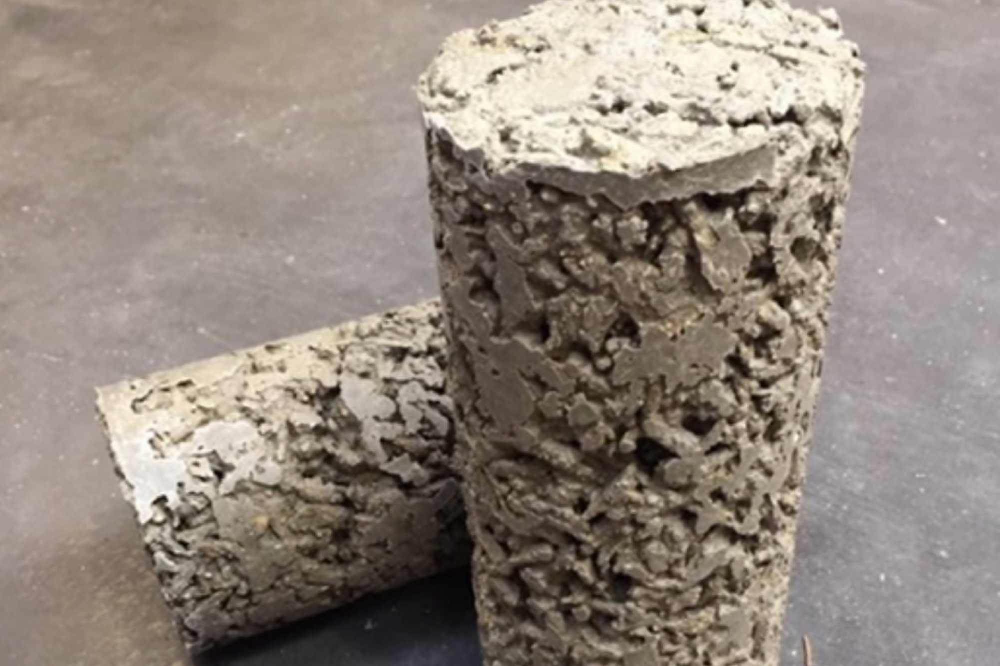
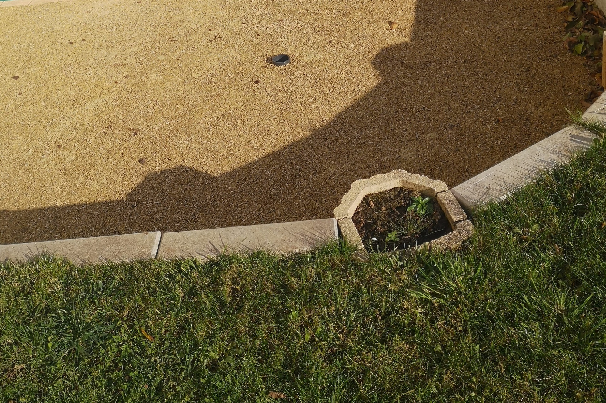

Absolubois, Revêtement de sol drainant en bois & béton
Absolubois est une entreprise qui développe un matériau de revêtement de sol drainant en bois et béton. Victoria Demange, fondatrice d'Absolubois, nous présente l'entreprise.
Comment est née l'idée d'Absolubois et où en est le projet aujourd'hui ?
L’histoire d’AbsoluBois débute en 2018 lorsque mes parents recherchaient un revêtement extérieur pour le domicile familial écologique et surtout perméable. Je me suis alors rendu compte qu’il n’y avait pas d’offre sur le marché.
En faisant davantage de recherches, j’ai été touché par les problématiques liées à l’urbanisation et surtout à l’imperméabilisation de plus en plus importantes de nos terres. Cela engendre le ruissellement des eaux pluviales.
Les conséquences de ce phénomène sont dommageables : inondations, sous-alimentation des nappes phréatiques, impact sur le cadre de vie et la sécurité des usagers, pollution des sols, altération de la nature et disparition d’espèces vivantes. De plus, l’industrie de production de ciment est un véritable gouffre énergétique. Or, le ciment est le composant principal du béton qui recouvre la majorité des sols extérieurs. Chaque seconde, nous produisons plus de 25 T de ciment. En termes d’émissions de dioxyde de carbone, c’est comme si je faisais 7 fois le tour de la planète en voiture CHAQUE seconde.

Les acteurs de la filière bois, les scieurs notamment sont préoccupés par la crise des scolytes qui rend le bois local inutilisable pour un grand nombre de filières. Il est nécessaire de trouver des solutions pour valoriser ce bois. Etant ingénieur de l'ENSTIB (Ecole Nationale Supérieure des Technologies et des Industries du Bois), j'ai réfléchi à une manière de répondre à toutes ces problématiques et j'ai donc créé le projet AbsoluBois. Il vise à commercialiser des revêtements de sol extérieurs en béton et bois drainants. Il s’agit de lier des copeaux de bois colorés naturellement avec du ciment.
Le revêtement pourra être appliqué sur les parkings, les pistes cyclables, les voies piétonnes, les routes pour véhicules légers et limitées à 30 km/h ou encore les entourages d’arbres ou cours d’écoles. Plusieurs essais et prototypes ont été effectués mais pas suffisamment encore pour être certifié et pouvoir commercialiser. Actuellement, l’objectif est de participer à un maximum de concours et d’appel à projets pour financer les dernières recherches et obtenir la certification du matériau. Je suis incubé à l’Incubateur Lorrain, ce qui est un vrai avantage dans la création de la future start-up et en partenariat avec 4 laboratoires (Critt Bois, IJL, Cetelor, LERMAB) de renom qui croient au projet.
Quels problèmes Absolubois tente de résoudre ?
Ce matériau représente un premier pas vers des routes plus écologiques, limitant l’épuisement des ressources et mettant en valeur le bois. En effet, le caractère drainant du produit permet de limiter les risques d’inondations, la pollution des sols et d’améliorer la sécurité des usagers. Les nappes phréatiques sont facilement alimentées. Ce type de revêtement permet aussi de limiter les coûts liés à la gestion des eaux pluviales pour les collectivités. Le matériau permet de respecter les objectifs de zéro artificialisation nette et de la loi Alur, qui vise à limiter l'imperméabilisation dans les communes.
L’utilisation du bois, matériau renouvelable et piégeur de carbone, permet d’obtenir un revêtement plus respectueux de la planète avec un meilleur bilan carbone, extrêmement durable et plus léger. L’intégration dans le paysage est facilitée par l’utilisation des copeaux de bois et des couleurs claires qui limitent les effets îlots de chaleur en ville.
Quelles sont les difficultés lors de la création d'un tel projet ?
Lors de la création d'un tel projet, il faut toujours être persévérant et ne jamais lâcher ses objectifs. Il faut faire face aux remarques négatives sans se décourager et toujours croire en son projet. Chaque étape met énormément de temps à se concrétiser, il ne faut donc pas hésiter à aller frapper à plusieurs portes, parler un maximum du projet autour de soi, et demander de l'aide pour faire avancer les choses.
Pour ma part, je suis seule sur le projet et c'est aussi une difficulté de ne jamais partager les idées, les bonnes ou mauvaises nouvelles. J'attends donc de trouver un associé aussi passionné et déterminé que moi pour partager cette expérience extraordinaire et enrichissante à tout point de vue : professionnel ou personnel.

Quelles sont les prochaines étapes ?
Une fois les tests finalisés grâce aux laboratoires, nous pourrons expérimenter le revêtement sur un site pilote et il faudra avoir les certifications qui permettront de le commercialiser. Il faudra aussi obtenir des financements pour lancer la commercialisation.
Pour en savoir plus, contactez victoria.demange@yahoo.fr